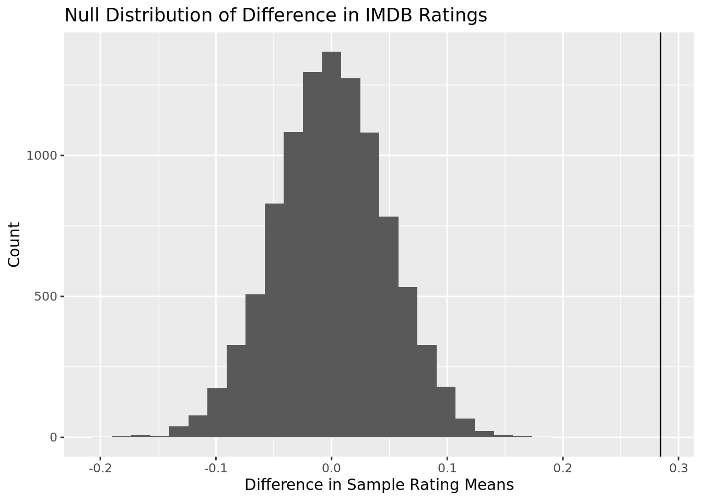
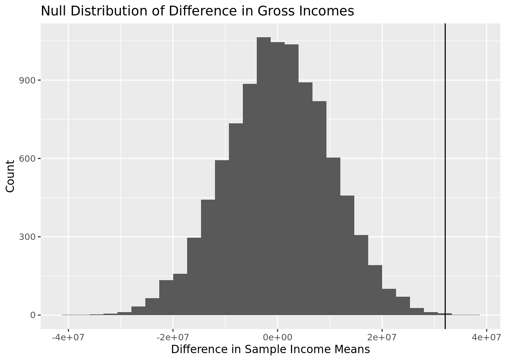

The Relationship between Race and Wealth in U.S. history over Time
Report
Introduction
From Marilyn Monroe to Legally Blonde, media has always influenced society’s perception of gender roles. Historically, these perceptions have put in place expectations that women should be subservient and unambitious compared to men who usually are portrayed as more multidimensional and courageous. In the 2000s, the Bechdel test gained popularity as this gender role discourse grew. First created by the cartoonist Alison Bechdel for the 1985 comic “Dykes to Watch Out For,” the basis of the test came from the 1929 essay by Virginia Woolf A Room of One’s Own where she observes how women’s portrayal in media has been always been confined to their relations to men.
According to the comic, a movie passes the Bechdel Test if it satisfies these 3 criteria:
- there are at least two named women in the picture,
- they have a conversation with each other at some point,
- and that conversation isn’t about a male character.
With the increase in representation and diversity of Hollywood, changes in society values, and record-hitting sales in heavily award movies, and more, we wanted to see how the Bechdel test influences the success of a movie across many different variables. Through this, we believe we are able to understand the gender ideals of our media and how they influence society to a greater degree.
Research Question: Does a movie’s passage of the Bechdel test influence its success?
This question is important as it relates to the level of female representation in the film industry, and the value that the film industry places on female actors, characters, and storylines in film.
Across a general trend, we hypothesize movies that fail the Bechdel test will have higher success, stemming from higher ratings, gross income and awards. Although there has been progress in creating larger roles for women in film, society still values certain gender stereotypes in films and some of these still do very well in the box office.
For ethical concerns, the Bechdel test has been shown to be flawed in that it sets a bare minimum rather than a adequate standard. For example, it sets no time standard for women to appear on the screen or address intersectionality by including race, sexuality, disability, or class. Therefore, if a movie or group of movies pass a test, it may seem like it has a good portrayal of women when in reality it still feeds into gender roles and lack of representation of women.
Data Information:
This data is from fivethirtyeight.com, and was originally collected from IMBD movie data. The data we worked with is from the FiveThirtyEight story titled “The Dollar-And-Cents Case Against Hollywood’s Exclusion of Women”. After reading this article, we wanted to further explore how a movie’s passage of the Bechdel test influences its financial and critic-based success. We chose this set as it contained over 1700 observations of films released from 1970-2013, as well as information on movie budgets, gross/international movie products, awards, movie genre, movie rating, and IMBD ratings.
The observations in this datasets are various movies, and the variables include: year (year movie was released), imdb (imdb code for movie), title (title of movie), test (whether it passes each criterion of the Bechdel test- contains two named female characters, do these two women speak to each other, do they speak to each other about something other than a man), binary (whether the movie passes the Bechdel test) budget (movie budget), domgross (the domestic gross product of the movie, intgross (the international gross product of the movie), and the budget/GDP of the movies converted to 2013 dollars.
Summary Statistics
As shown in the graph above, a majority of movies are between a 5.0 and a 7.5 IMDB rating. Also, there are very few movies that have a rating under 2.5 which may be a factor that we consider later.

This graph shows the amount of movies produced each year in our data set. As seen above, there is a much larger amount of movies produced in more recent years. This may lead to some years have a greater amount of movies that pass the Bechdel test than others. While we do not directly use this to draw conclusions, it is useful in giving an overview of the data we are using.

This graph, like the one above, gives more overview data about the dataset we are using. This graph shows how many movies out of the dataset as a whole pass the Bechdel test. As you can see, while a majority of movies do not pass the Bechdel test, it is not significantly skewed.
Literature:
Our research question sparked from a fivethirtyeight.com article that described how ⅓ of the top 50 movies from 2016 failed the Bechdel Test. The Bechdel Test is a simple test that assesses movies based on three criteria: does a movie have at least two named female characters? Do these named characters have at least one conversation? Is this conversation about something that is not about a man? We were surprised by the number of movies that did not pass this seemingly basic test, even in 2016. This article further explored diversity in the film industry, testing movies on whether the on-set crew were 50% women (of which none of these top 50 movies passed), and explored the racial diversity in the film industry.
To further explore female representation and characterization in the film industry, we want to investigate the relationship between film budget and profit in regard to whether films pass the Bechdel test.
(article: https://projects.fivethirtyeight.com/next-bechdel/)
Methodology
This graph shows the proportion of movies to pass the Bechdel test at different IMDB scores. IMDB scores are out of 10 so each bar represents 2.5 out of the total 10 points with the first being a score of 0-2.5. Our data shows that movies that fall withing the 2.5-5.0 ranking on IMDB are the most likely to Pass the Bechdel test, while higher-ranked movies are less likely to pass than middle-ranked movies. As shown in the summary statistics, there are less movies that have ratings between 0 and 5, with little to no movies having a rating below 2.5. This may cause our graph to be skewed and may explain why the first two categories show different results than the latter two. We decided to use this to show how the Bechdel test might compare to critic ratings to see if there is a correlation.
Warning in FUN(X[[i]], ...): NAs introduced by coercionWarning: Removed 26 rows containing non-finite values (`stat_boxplot()`).This graph shows how international gross income compares to the time period of release and the result of the Bechdel test. As you can see from the graph, in most time periods movies that fail the Bechdel test do better to make money. While this does not include budget for movies, it gives good insight into how gross income relates to the Bechdel test.
This graph shows how winning an Oscar reflects on the Bechdel test. Winning an Oscar is one of the most prestegious awards for a film so usually only the best films of the years are considered. Looking at the data, we can see that winning an Oscar does not seem to have much affect on passing the Bechdel test. Because an Oscar is a measure of success, this graph gives great information for us to answer our research question.
Results
We decided to use both the Chi-Squared Test for Independence and the Test for difference of means. The Chi-Squared Test for Independence helps determine if the two variables are likely to be related. As we are measuring whether the Bechdel test affects success, knowing if the two variables are likely to be related can be a good first step. We are also using the difference in means test, also known as the t-test, to see if both ratings and income are influenced by the Bechdel test. Since both of these are numeric values, a difference in means is very helpful in determining if there is a meaningful difference when taking into account the Bechdel test.
Chi Squared Test for Independence for IMDB:
While the IMDB score is a numerical value, we divided it into categorys. Because we are dividing it into categories, we are able to use the Chi-Squared Test for Independence. We chose to alter the data because in our first graph we altered the data in the same way and this may help us draw better conclusions.
\(\H_o:\) IMDB Rating and passing the Bechdel test are independent of each other. \(\H_a\) IMDB Rating and passing the Bechdel test are not independent of each other.
Pearson's Chi-squared test with simulated p-value (based on 2000
replicates)
data: bechdel$type and bechdel$binary
X-squared = 26.572, df = NA, p-value = 0.0004998After running our Chi-Squared we found the p value to be 7.237e-06. Because our p-value of 7.237e-06 is less than our alpha value of 0.05, we reject the null hypothesis and conclude that passing the Bechdel test and IMDB score are not independent observations.
Difference in Means for IMDB ratings:
# A tibble: 2 × 2
binary mean_rating
<chr> <dbl>
1 FAIL 6.89
2 PASS 6.60\(\bar{x_f} - \bar{x_p}\) = 0.284488
\(H_o: \mu_f - \mu_p\) = 0
\(H_a: \mu_f - \mu_p >\) 0
Warning: Removed 202 rows containing missing values.Warning: Please be cautious in reporting a p-value of 0. This result is an
approximation based on the number of `reps` chosen in the `generate()` step. See
`?get_p_value()` for more information.# A tibble: 1 × 1
p_value
<dbl>
1 0`stat_bin()` using `bins = 30`. Pick better value with `binwidth`.
- Assuming that the true mean IMDB rating for movies that fail the Bechdel test is equal to the the true mean IMDB rating for movies that pass the Bechdel test, the probability that we observe a sample mean of 0.284488 or greater is less than 0.001. Since our p-value is less than 0.05 we reject the null hypothesis and conclude the alternative hypothesis that movies that fail the Bechdel test have a greater true mean IMDB rating
Difference in Means test for income generated:
# A tibble: 2 × 2
binary mean_income
<chr> <dbl>
1 FAIL 164736598.
2 PASS 132671872.\(\bar{x_f} - \bar{x_p}\) = 32064726
\(H_o: \mu_f - \mu_p\) = 0
\(H_a: \mu_f - \mu_p >\) 0
Warning in mask$eval_all_mutate(quo): NAs introduced by coercionWarning: Removed 11 rows containing missing values.# A tibble: 1 × 1
p_value
<dbl>
1 0.0008`stat_bin()` using `bins = 30`. Pick better value with `binwidth`.
- Assuming that the true mean international gross incomes for movies that fail the Bechdel test is equal to the the true mean international gross incomes for movies that pass the Bechdel test, the probability that we observe a sample mean of 32064726 or greater is about 0.001. Since our p-value is less than 0.05 (0.001 < 0.05) we reject the null hypothesis and conclude the alternative hypothesis that movies that fail the Bechdel test have a greater international gross income.
Chi-Squared Test for Independence for Oscar winners:
\(\H_o:\) Winning an Oscar and passing the Bechdel test are independent of each other. \(\H_a\) Winning an Oscar and passing the Bechdel test are not independent of each other.
Pearson's Chi-squared test with Yates' continuity correction
data: bechdel$oscar_won and bechdel$binary
X-squared = 0.028517, df = 1, p-value = 0.8659After running our Chi-Squared we found the p value to be 0.8659. Because our p-value of 0.8659 is greater than our alpha value of 0.05, we fail to reject the null hypothesis and can not conclude that passing the Bechdel test and winning an Oscar have a correlation.
Overall, we conclude that movies that fail the Bechdel Test are more successful in terms of income and ratings. However, for awards, we are unable to conclude that movies that fail the Bechdel Test are less likely to receive an award.
For income, we used a box plot and a difference in means distribution to find our results. From the box-plot we found that the true mean income was greater across all time periods. From our null distribution, we found a p-value equal to .001 showing that the difference in the true mean incomes in movies that fail the Bechdel test and movies that pass the Bechdel test is greater than 0. Overall, this shows that more profit is made, and therefore more tickets are bought, when limiting gender roles are present in movies.
For ratings, we performed a chi-squared test and displayed a bar chart of imdb ratings. Our bar chart overall displayed a trend of higher ratings having a higher Bechdel Test failing proportion and our chi-squared test resulted in a p-value of 7.237e-06. From this we reject the null hypothesis that IMDB ratings and failing the Bechdel test are independent. Additionally we calculated a difference in means null distribution which had a p-value of less than 0.001 concluding that IMDB ratings are greater for movies that fail the Bechdel Test.
Finally for awards, we calculated a p-value of 0.8659. As a result, we fail to reject the null hypothesis that winning an Oscar and passing the Bechdel test are independent. Looking at our graph of Oscar Won vs. Bechdel test result, we see a similar trend. The proportion of movies that failed the Bechdel test were about the same whether or not the movies had one an Oscar. We conclude that passing the Bechdel test has little to no effect on whether a movie wins an Oscar.
Despite the lack of evidence in awards, we found that the overall success in movies increases when such movies fail the Bechdel Test. As awards are chosen by a small committee with certain guidelines in place, it makes sense for them not to show a significant difference regarding the Bechdel Test as many biases and politics are at play. One the other hand, ratings and income are dictated by the overall viewers showing the greater societal values of a one-dimesional, dependent ideal women.